Feria de Concientización

La 1ra Feria de Concientización reunió instituciones y jóvenes para reflexionar y aprender sobre la prevención de embarazos adolescentes, promoviendo el cuidado y la responsabilidad desde la juventud.
Reestructuración PDPEAJ-BENI

La nueva mesa directiva y delegados asumieron el compromiso de fortalecer el trabajo en beneficio de la juventud, impulsando cambios positivos con energía renovada.
Plataforma Nacional


La PDPEAJ-BENI se unió a las plataformas de otros departamentos para crear la Plataforma Nacional, demostrando unidad y compromiso en la lucha por un futuro más informado y saludable.
Corso Preventivo


Durante el Corso Trinitario, se repartieron métodos anticonceptivos y se brindó información sobre prevención de ETS, demostrando que la diversión puede ir de la mano con la responsabilidad.
Ciclo Webinar

En alianza con plataformas de La Paz y Potosí, se realizaron webinars sobre relaciones de pareja, comunicación y vínculos sanos, promoviendo el bienestar emocional de los jóvenes.
Presentación Oficial


Se presentó oficialmente a los nuevos delegados y directiva, quienes liderarán el plan de trabajo y actividades durante la gestión, fomentando la participación y el aprendizaje.
Consejo Departamental de la Juventud


Participación activa en el evento "Construyendo Propuestas por Nuestros Derechos", donde se presentaron iniciativas juveniles para fortalecer la prevención y el liderazgo.
Taller "Alza Tu Voz"
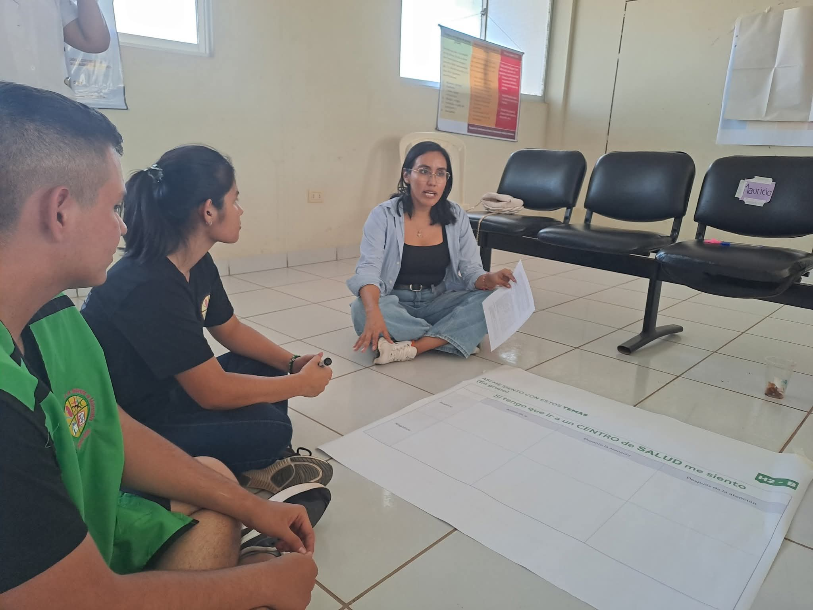
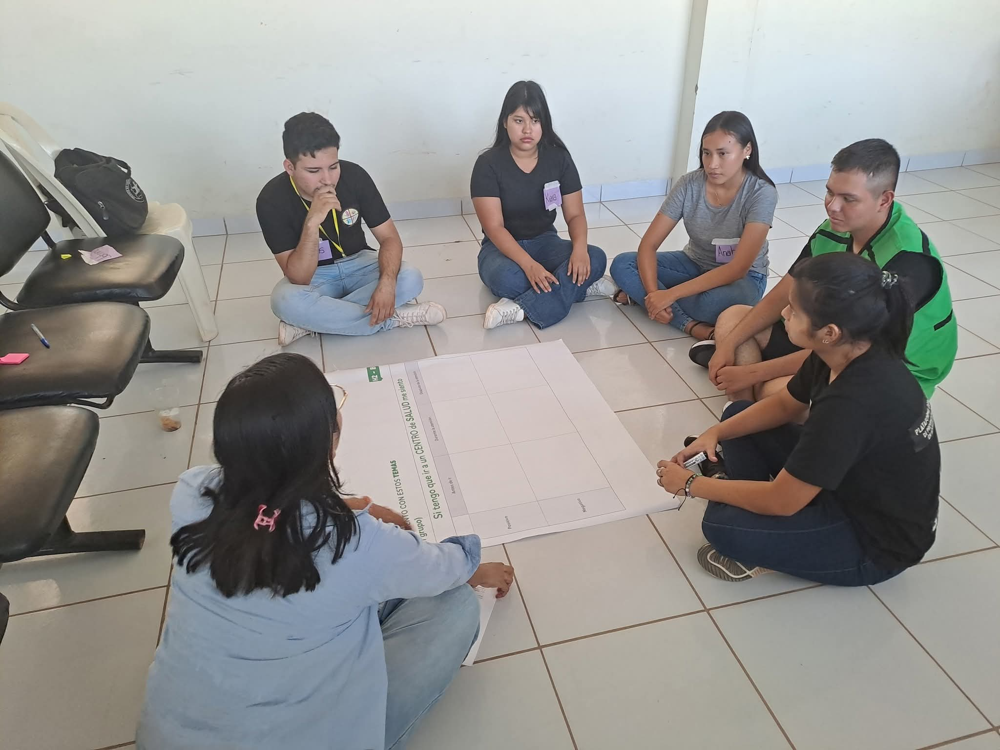
Este taller implementado por UNICEF y SIESAR, tuvo como objetivo hacer conocer las necesidades que tenian los jóvenes al acceder a un centro AIDAJ. La Plataforma siendo parte de este taller, expreso las necesidades que tienen los jóvenes y la de los mismos integrantes de la plataforma para acceder a un centro AIDAJ y como es que se puede mejorar este acceso.
Bolsa de Empleo juvenil 2025
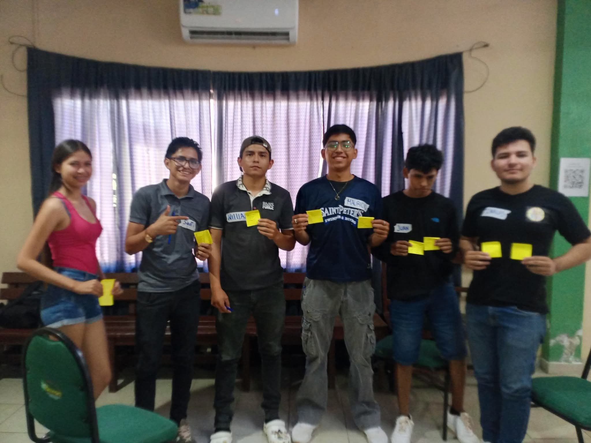
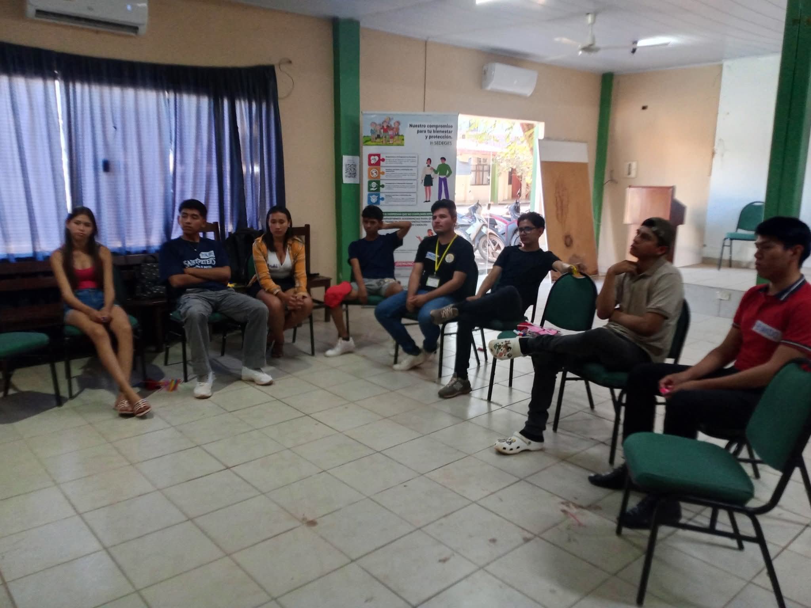
La PDPEAJ-BENI participo en los tallleres de Bolsa de Empleo Juvenil 2025, donde se brindaron herramientas y recursos para mejorar la empleabilidad de los jóvenes en el mercado laboral. Estos talleres fueron una oportunidad para que los jóvenes adquirieran habilidades prácticas y conocimientos sobre cómo buscar empleo, preparar un currículum vitae efectivo y enfrentar entrevistas de trabajo con confianza. La participación de la plataforma en estos talleres demuestra su compromiso con el desarrollo integral de los jóvenes, no solo en términos de prevención de embarazos adolescentes, sino también en su crecimiento personal y profesional. Al empoderar a los jóvenes con estas habilidades, la PDPEAJ-BENI contribuye a su autonomía y capacidad para tomar decisiones informadas sobre su futuro laboral y personal. Ademas de que no solo se abarco el tema de empleabilidad, sino que tambien se toco el tema de salud sexual y reproductiva, derechos sexuales y derechos reproductivos, lo cual es un tema de gran importancia para la plataforma.
taller “Juventudes con Voz y Poder”
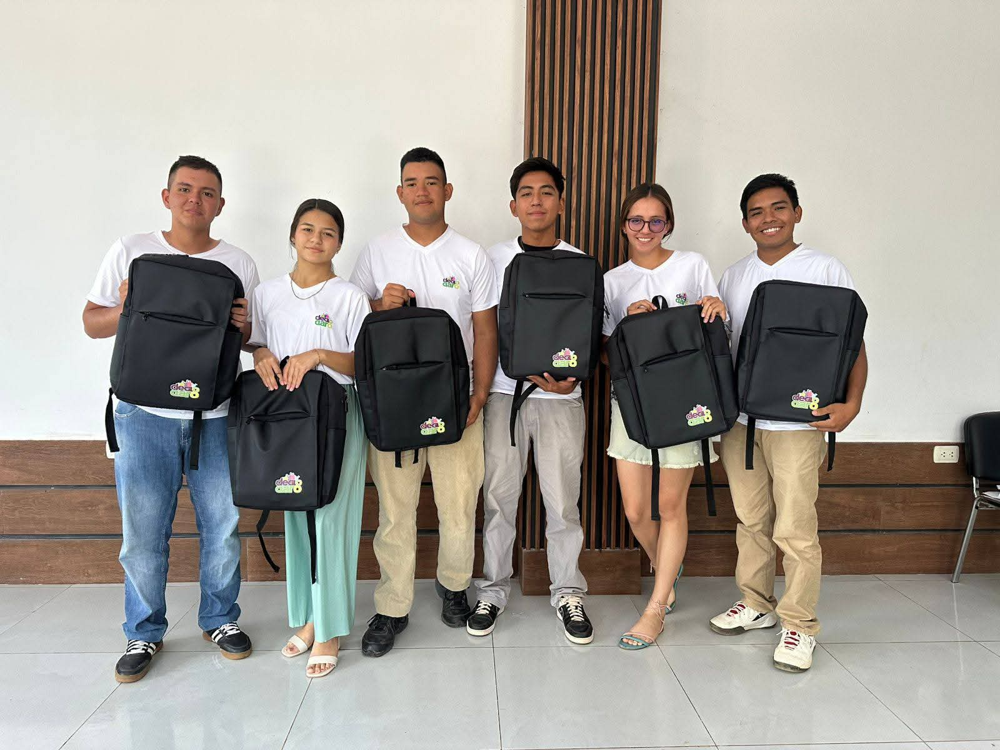
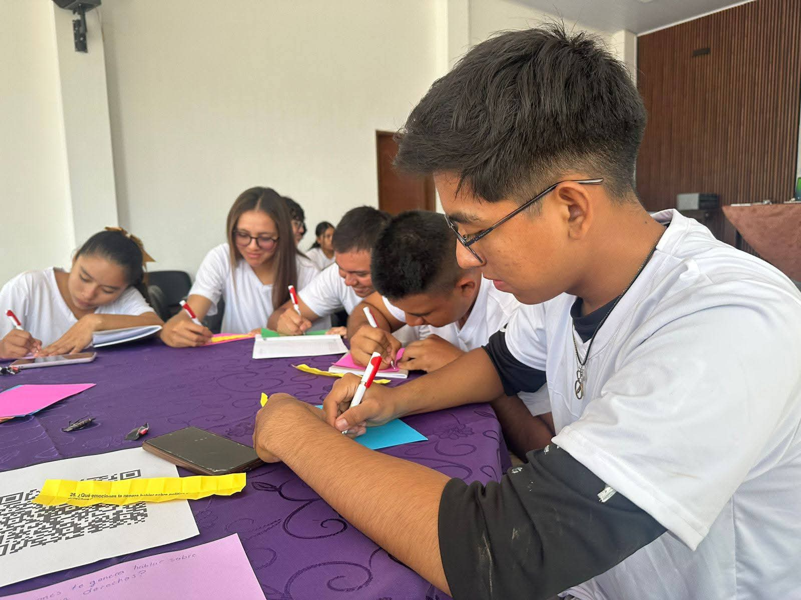
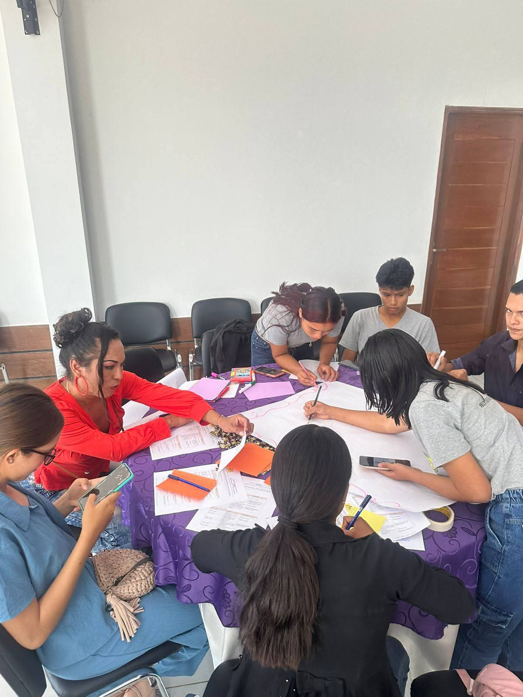
Durante este taller que fue desarrollado por la organización Coomujer, se abordaron temas fundamentales como derechos sexuales y derechos reproductivos y la igualdad de género. La participación de la PDPEAJ-BENI en este taller refleja su compromiso con la promoción de una sexualidad responsable y el empoderamiento de los jóvenes para que puedan tomar decisiones informadas sobre su salud sexual y reproductiva. Además, el enfoque en la igualdad de género es crucial para desafiar los estereotipos y roles de género que a menudo limitan las oportunidades y el desarrollo de los jóvenes. Al participar en este taller, la plataforma no solo fortalece sus conocimientos y habilidades en estos temas, sino que también contribuye a crear una comunidad más consciente y comprometida con la salud y el bienestar de sus miembros.
Proyecto de Ley de Prevención de Embarazo adolescente y Joven
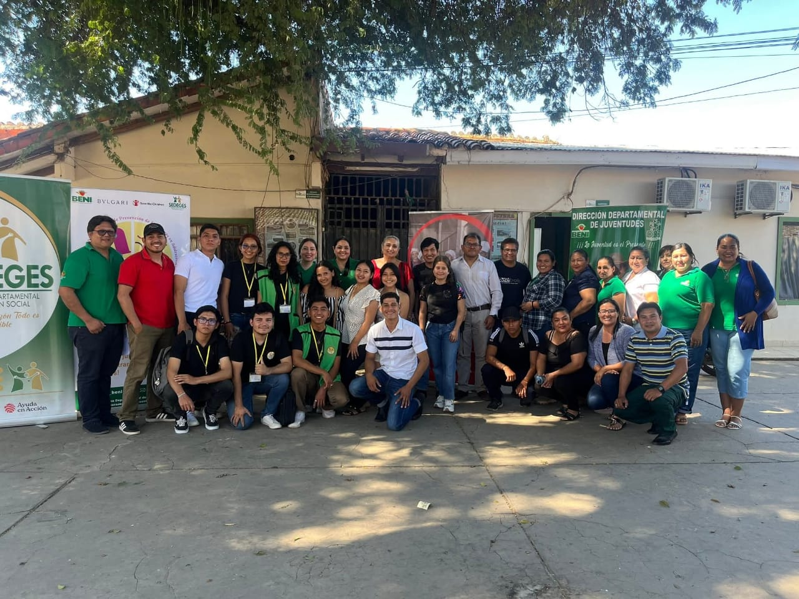
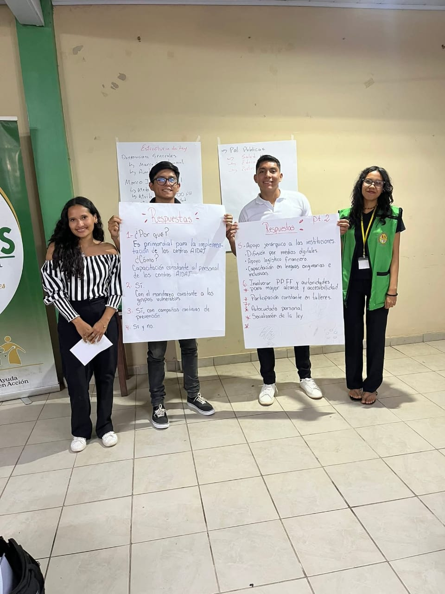
En este espacio de dialogo que se desarrollo en el salón del SEDEGES, la plataforma en conjunto con diferentes instituciones y organizaciones de la sociedad civil, se expresó la alarmante cantidad de embarazos en adolescentes que el departamento del Beni tiene, y como es que se puede trabajar en conjunto para reducir esta cifra. Es por ello que se propuso el Proyecto de Ley de Prevención de Embarazo adolescente y Joven, donde se recogieron los insumos y de dialogo acerca de las politicas públicas para llevar a cabo este proyecto de ley. La propuesta de ley tiene como objetivo principal establecer políticas y estrategias claras para abordar la problemática de los embarazos en adolescentes, promoviendo la educación sexual integral, el acceso a métodos anticonceptivos y el fortalecimiento de los servicios de salud sexual y reproductiva. La participación activa de la PDPEAJ-BENI en este espacio de dialogo demuestra su compromiso activo que tiene para que los adolescentes y jóvenes de todo el departamento del Beni tengan acceso a una educación sexual integral y a servicios de salud adecuados, contribuyendo así a la reducción de embarazos no deseados y al empoderamiento de los jóvenes en la toma de decisiones informadas sobre su salud y bienestar.
Feria en conmemoración al día Mundial de la Trata y Trafico de personas
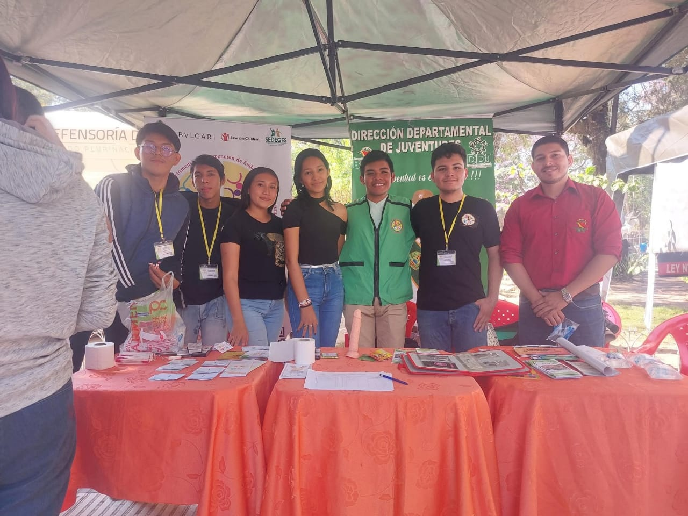
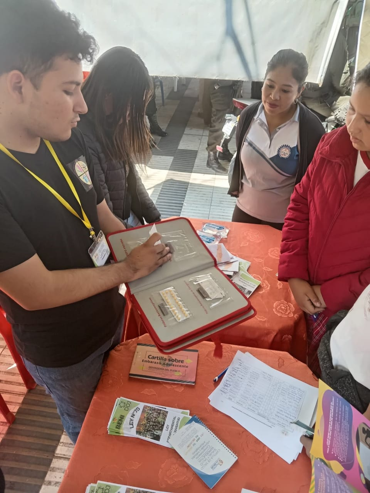
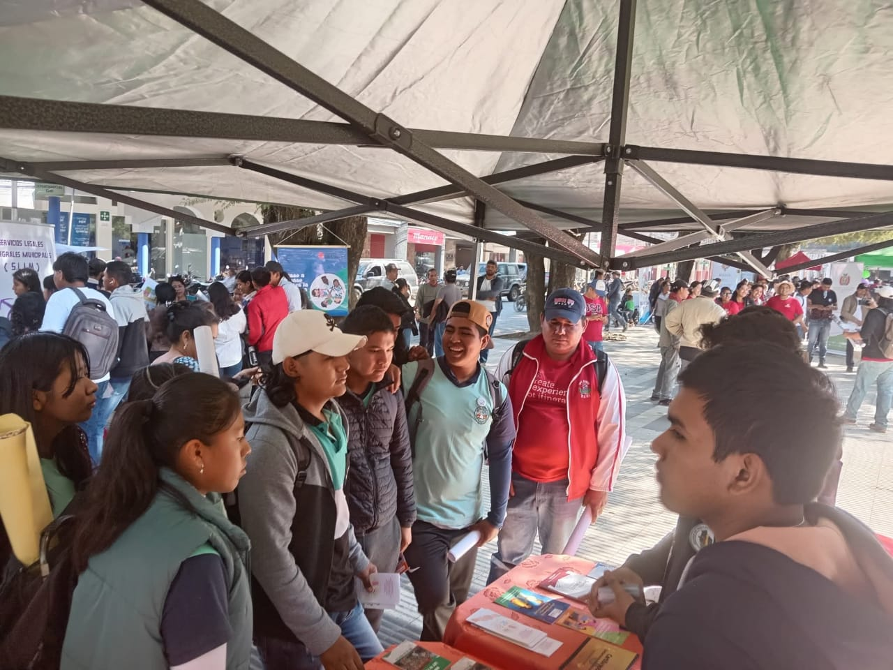
En esta feria que se desarrollo en la plaza principal de la ciudad de La Santisima Trinidad, se abordaron temas de gran importancia como la trata y trafico de personas, donde se brindó información acerca de como prevenir este tipo de situaciones y como es que se puede ayudar a las personas que han sido victimas de trata y trafico de personas. Ademas de contar con el apoyo de La Dirección Departamental de Juventudes y SEDEGES para elobrar nuestro stand y contar con el material informativo necesario para que los jóvenes y la población en general puedan conocer más acerca de este tema tan importante. Abarcando tambien las tematicas que la plataforma maneja y hablando acerca de La Ley Departamental de Juventudes N°75.